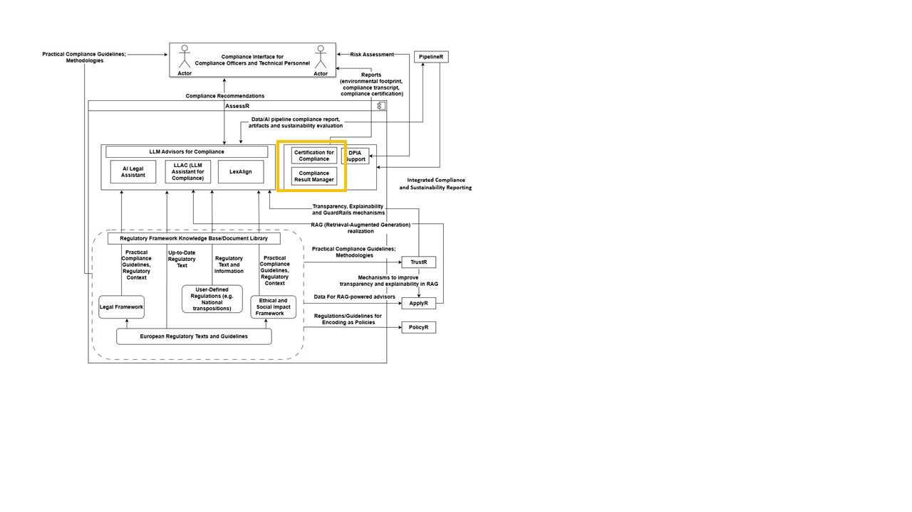

DPIA Support Module

This tool serves as a one-stop shop for accessing certification reports, fully integrated with the DATAPACT platform. Built on a customized off-the-shelf Content Management System, it supports reports generated by multiple tools while providing centralized, secure access for users to retrieve certifications in real time. The system features a dynamic Certification Dashboard, enabling on-demand visual reports with metrics such as completion rates, certification statuses, and compliance tracking for informed decision-making. It also includes smart version control for certificates, ensuring users always reference the most up-to-date documents
The picture below shows the component in the DATAPACT architecture. 
Compliance Result Manager is a purpose-built solution designed to streamline and strengthen the collection, management, and analysis of compliance results. At its core, the tool leverages the capabilities of the DATAPACT platform, a robust framework for centralizing data from multiple sources and enabling secure, real-time access. The system applies structured workflows to consolidate compliance outcomes, track adherence to policies and regulations, and provide reproducible visual reports for informed decision-making. It also incorporates smart version control and direct pointers to relevant usage policies and legislative guidelines, ensuring transparency and accountability across compliance processes.
| Organisation (s) | License Nature | License |
|---|---|---|
| University of Southampton | Open Source | TBD |
| What (types) | How(Process) | Values |
|---|---|---|
| information completeness and clarity | User Satisfaction | >90% |
| Project Links |
|---|
| Software GitHub Repository --> Result Manager https://github.com/DATAPACT/Certification-Result-Manager |
N/A.
The custom version for DATAPACT is still under development.
N/A
n/a
n/a
n/a